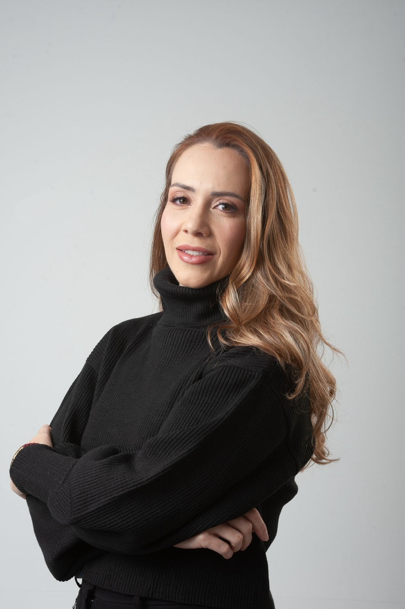

Sexta · 30 AGO
Diagnóstico e leitura facial
- Leitura por terços, vetores e proporções
- Definição do projeto individual por paciente
- Marcação anatômica e planejamento de camadas
- Cases vivos com pacientes modelo dos times
Três dias presenciais para aprender a projetar o rosto inteiro, não apenas aplicar. Para dentistas e biomédicos habilitados em harmonização orofacial.
Vagas limitadas. 3 times de 3 alunos. Tutoria 1 para 3.
O método
O Método NaturalUp® não trata regiões soltas. Ele lê o rosto como uma engenharia única, define o vetor de envelhecimento de cada paciente e devolve estrutura onde o tempo tirou.
Leitura por terços e por vetores. Você entende por que o rosto envelheceu antes de tocar nele.
Plano individualizado por paciente. Sem protocolo de balcão, sem aplicar por aplicar.
Resultado proporcional ao tempo. Nada de rosto cheio, congelado ou artificial.
Toxina, preenchimento, bioestimulação e regeneração orquestrados no mesmo projeto.
O paciente sai parecido com ele mesmo. Só que melhor.
Para quem é
A imersão é para profissionais legalmente habilitados em harmonização orofacial que querem dominar o rosto inteiro, com método e responsabilidade.
Cronograma
Diagnóstico e leitura facial
Protocolos Full Face em prática
Refino, regeneração e devolutiva
Investimento e vagas
Valor da imersão
R$ 8.900
no cartão em até 12×
Inclui: três dias presenciais com tutoria, materiais de alto padrão para os protocolos práticos, pacientes modelo reais, protocolo de chegada, certificado e acesso à plataforma Ampla Facial.
Quero reservar minha vagaQuem ensina

CRO/RJ 49765 · @dr.gustavomartins
Cirurgião dentista e biomédico, Mestre em Harmonização Orofacial. Fundador da plataforma Ampla Facial e criador do Método NaturalUp®. Dirige três clínicas no Rio de Janeiro.

CRO/RJ CD-33262
Cirurgiã dentista especialista em harmonização orofacial. Parceira clínica da primeira edição da Imersão Full Face em Volta Redonda.
Reserve sua vaga
30·31 AGO + 01 SET 2026 · Volta Redonda / RJ · 9 vagas · turma única
Resposta em horário comercial · (21) 99552-3509